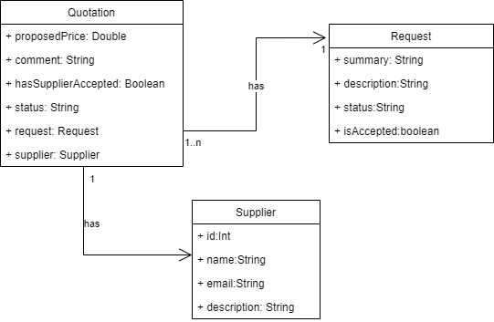
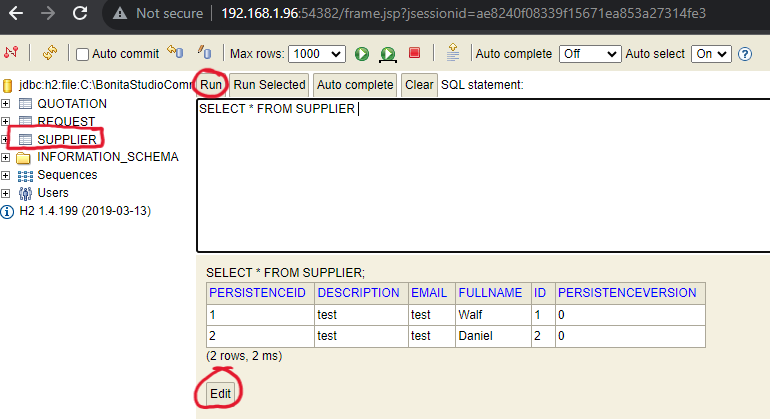
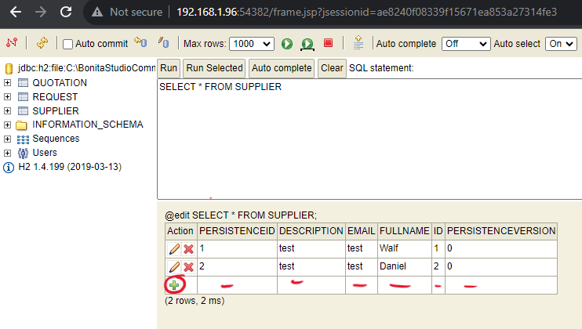

Add data object
Follow the next steps to add the UML objects within the BDM:-
Click on bom.xml in the Business Data Model

-
Select a package (you can add you own packages)

-
Click on "Add Object"

-
Change the name of the object and then define the object attributes and their types

Add UML objects to the DBM
Follow the steps described above to add UML objects to the DBM.
Add data information to the DBM
In this exercice, we suppose that the suppliers already stored in the BDM (database). Therefore, you need to add it manually to the database.-
Right click on the BDM "bom.xml" file. Then, click on "Browse data (h2 console) ...".

-
The database should automatically opened in the browser. Double click on "Supplier", and then click on
"RUN". Then, click on "Edit" to edit the database table and to start adding information.
 -
Click on icon "+" and add new suppliers (2 or 3).
